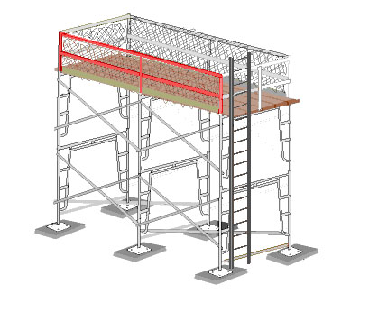
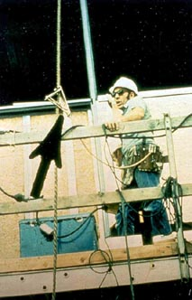
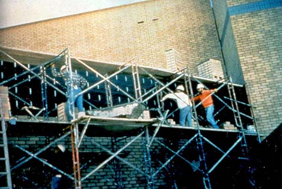

|
|
Worker
falls is the number one scaffold hazard. Fall protection consists of
either personal fall arrest systems or guardrail systems, and must be
provided on a scaffold 10 feet or more above a
lower level. Specific requirements are described below.
|
General |
|
-
 Each employee on a scaffold more than 10 feet above a lower level must
be protected from falling to that lower level. [1926.451(g)(1)] Each employee on a scaffold more than 10 feet above a lower level must
be protected from falling to that lower level. [1926.451(g)(1)]
-
Fall protection consists of
either personal fall
arrest systems or guardrail systems meeting OSHA requirements. [1926.451(g)(1)(vii)]
-
Employees performing overhand bricklaying operations from a supported
scaffold must be protected from falling from all open sides and ends of the scaffold, except
at the side next to the wall being laid. [1926.451(g)(1)(vi)]
|
|
Fall Arrest Systems
|
|
-
In addition to meeting the requirements of 1926.502(d), personal fall arrest
systems used on scaffolds are to be attached by lanyard to a vertical lifeline, horizontal
lifeline, or scaffold structural member. [1926.451(g)(3)]
-
When vertical lifelines are used, they must be fastened to a fixed safe
point of anchorage, independent of the scaffold, and be protected from sharp
edges and abrasion. Safe points of anchorage include structural members of buildings, but not
standpipes, vents, electrical conduit, etc., which may give way under the
force of a fall. [1926.451(g)(3)(i)]
-
It is dangerous and therefore impermissible for two or
more vertical lifelines to be attached to each other, or to the same point
of anchorage. [1926.451(g)(3)(iv)]
-
When horizontal lifelines are used, they are to be secured to two or more
structural members of the scaffold. [1926.451(g)(3)(ii)]
|

Figure 1. An example of fall arrest systems. Note that this worker is wearing a safety belt, whereas
the new standard requires a full body harness.
|
|
|
Guardrail Systems
|
|
-
Guardrail systems must be installed along all open sides and ends of
platforms, and must be in place before the scaffold is released for use by
employees other than erection/dismantling crews. [1926.451(g)(4)(i)]
-
Walkways located within a scaffold must have guardrail systems
installed within 9½ inches of and along at least one side of
the walkway. [1926.451(g)(1)(v)]
-
Each toprail or equivalent member of a guardrail system must be
able to withstand a force applied in any downward or horizontal direction, at any
point along its top edge, of at least 200 pounds. [1926.451(g)(4)(vii)]
-
The top edge height of toprails on supported scaffolds
must be
between 36 inches and 45 inches. When conditions warrant, the height of the
top edge may exceed the 45-inch height, provided the guardrail system meets all other criteria.
(Note: The minimum top edge height on scaffolds manufactured or placed in service after January 1, 2000
is 38 inches). [1926.451(g)(4)(ii)]
-
Midrails, screens, mesh, intermediate vertical members, solid panels,
etc., must be able to withstand a force applied in any downward or horizontal direction, at any point along the
midrail or other member, of at least 150 pounds. [1926.451(g)(4)(ix)]
-
When midrails are used, they must be installed at a height approximately
midway between the top edge of the guardrail system and the platform surface.
[1926.451(g)(4)(iv)]
-
When screens and mesh are used, they must extend from the top edge of the
guardrail system to the scaffold platform, and along the entire opening between the supports.
[1926.451(g)(4)(v)]
-
When intermediate members (such as balusters or additional rails) are used,
they must be no more than 19 inches apart. [1926.451(g)(4)(vi)]
- Guardrails must be surfaced to prevent punctures
or lacerations to employees, and to prevent snagging of clothing, which may cause
employees
to lose their balance. [1926.451(g)(4)(xi)]
-
Ends of rails may not extend beyond their terminal posts, unless
they do not constitute a projection hazard to employees. [1926.451(g)(4)(xii)]
-
In lieu of guardrails, crossbracing may serve as a toprail
or midrail, providing the crossing point is:
-
between 20 and 30 inches above the work platform for a
midrail, or
-
between 38 and 48 inches above the work platform for a
toprail. [1926.451(g)(4)(xv)]
For other scaffolding guardrail requirements, see 1926.451(g)(4).
|

Figure 2. Obvious violation: No guardrail, no fall
arrest system. Also, because scaffold is six tiers
(bucks) high it must be tied in to the building [1926.451(c)(1)]. |
|

Figure 3. Violation: Scaffold has X-brace
that can act as a top rail, but a midrail and toe boards are
still required. These workers are also not wearing fall protection. |
|
|
Erectors and
Dismantlers
|
|
-
Employers are required to provide fall protection for employees
erecting or dismantling supported scaffolds where it is feasible, and where installing
and using it does not create a greater hazard. [1926.451(g)(2)]
|
|
Competent Person
|
|
-
The employer must designate a competent person, who would be
responsible for determining the feasibility and safety of providing fall protection for employees erecting or
dismantling supported scaffolds. [1926.451(g)(2)]
|
| Home | Supported Scaffolds | Suspended
Scaffolds | Other Scaffolds |
| Frequently Asked
Questions | Overview
| Standards | Glossary | User
Guide | Credits |
|